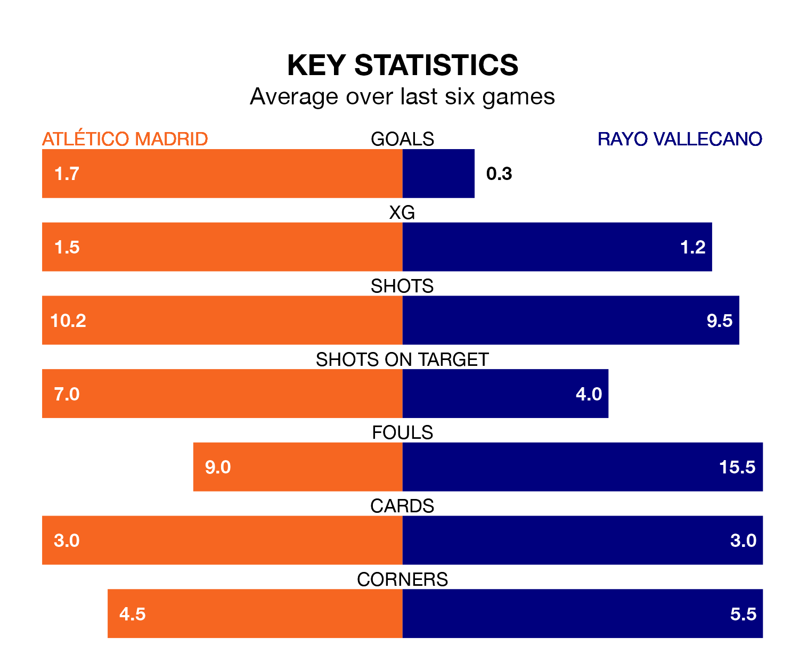

Atlético Madrid are heavy favourites to keep all three points at home in Wednesday's late kick-off against Rayo Vallecano.
Atlético, who sit third in La Liga with 21 games played, are priced at 1.4 to seal victory at the Estádio Cívitas Metropolitano.
Sitting 10 places and 20 points behind them in the table, Rayo are 7.5 to win with *Betting Company*, while the draw is at 4.8.
With 42 goals in 21 games so far this season, Atlético are scoring more than average in the league with 2.0 goals per game. And they are conceding fewer than average, letting in 23 goals at a rate of 1.1 per game.
Rayo, meanwhile, are below average scorers, with 0.9 goals per game, compared to a league average of 1.3. They have conceded 1.2 goals per game.
With Stole Dimitrievski between the sticks, the visitors can rely on one of the league's safest pair of hands. He has kept nine clean sheets in his 21 appearances this season, and only one other 'keeper – Athletic Club Bilbao's Unai Simón – has been able to prevent the opposition scoring on more occasions in La Liga.
In the home side's net, Jan Oblak has eight clean sheets in 21 games.
In the last 10 years, Atlético and Rayo have played each other on 13 occasions. Atlético won 10 of them and they drew three times.
On average, Atlético scored 1.9 goals and Rayo 0.3 in those matches.
Their last meeting was on August 28, when Atlético won 7-0 away.
Atlético are in mixed form in La Liga, with three wins and a draw from their last six games.
With a win and two draws over that period, Rayo's form is worse – they have taken five points from 18, compared to Atlético's 10.
Atlético's last match was on Sunday, a 2-0 win against Valencia CF, with Memphis Depay and Samuel Lino getting the goals for Atlético.
Rayo drew 0-0 with Real Sociedad last time out, on Saturday.
Updated: 13:20 (UTC), 29/01/24